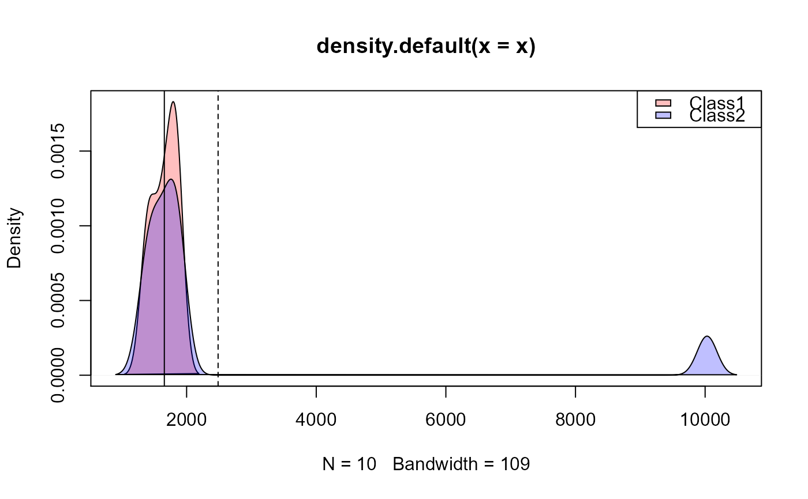

Calculates variety of two-class sample separability metrics
Available statistics:
M-Statistic (Kaufman & Remer 1994) - This is a measure of the difference of the distributional peaks. A large M-statistic indicates good separation between the two classes as within-class variance is minimized and between-class variance maximized (M <1 poor, M >1 good).
Bhattacharyya distance (Bhattacharyya 1943; Harold 2003) - Measures the similarity of two discrete or continuous probability distributions.
Jeffries-Matusita distance (Bruzzone et al., 2005; Swain et al., 1971) - The J-M distance is a function of separability that directly relates to the probability of how good a resultant classification will be. The J-M distance is asymptotic to v2, where values of v2 suggest complete separability
Divergence and transformed Divergence (Du et al., 2004) - Maximum likelihood approach. Transformed divergence gives an exponentially decreasing weight to increasing distances between the classes.
separability( x, y, plot = FALSE, cols = c("red", "blue"), clabs = c("Class1", "Class2"), ... )
| x | X vector |
|---|---|
| y | Y vector |
| plot | plot separability (TRUE/FALSE) |
| cols | colors for plot (must be equal to number of classes) |
| clabs | labels for two classes |
| ... | additional arguments passes to plot |
A data.frame with the following separability metrics:
B - Bhattacharryya distance statistic
JM - Jeffries-Matusita distance statistic
M - M-Statistic
D - Divergence index
TD - Transformed Divergence index
Anderson, M. J., & Clements, A. (2000) Resolving environmental disputes: a statistical method for choosing among competing cluster models. Ecological Applications 10(5):1341-1355
Bhattacharyya, A. (1943) On a measure of divergence between two statistical populations defined by their probability distributions'. Bulletin of the Calcutta Mathematical Society 35:99-109
Bruzzone, L., F. Roli, S.B. Serpico (1995) An extension to multiclass cases of the Jefferys-Matusita distance. IEEE Transactions on Pattern Analysis and Machine Intelligence 33:1318-1321
Du, H., C.I. Chang, H. Ren, F.M. D'Amico, J. O. Jensen, J., (2004) New Hyperspectral Discrimination Measure for Spectral Characterization. Optical Engineering 43(8):1777-1786.
Kailath, T., (1967) The Divergence and Bhattacharyya measures in signal selection. IEEE Transactions on Communication Theory 15:52-60
Kaufman Y., and L. Remer (1994) Detection of forests using mid-IR reflectance: An application for aerosol studies. IEEE T. Geosci.Remote. 32(3):672-683.
Jeffrey S. Evans jeffrey_evans@tnc.org
norm1 <- dnorm(seq(-20,20,length=5000),mean=0,sd=1) norm2 <- dnorm(seq(-20,20,length=5000),mean=0.2,sd=2) separability(norm1, norm2)#> B JM M mdif D TD #> 1 0.03854306 0.07561946 0 0 0.3333837 0.08163315s1 <- c(1362,1411,1457,1735,1621,1621,1791,1863,1863,1838) s2 <- c(1362,1411,1457,10030,1621,1621,1791,1863,1863,1838) separability(s1, s2, plot=TRUE)#> B JM M mdif D TD #> 1 0.9940818 1.259874 0.2910931 829.5 104.1721 1.999996